NFR
Introdução
O presente documento visa apresentar a inspeção dos modelos de NFR (Non-functional requirements), trabalho desenvolvido no módulo de Modelagem de Requisitos.
Objetivo
A inspeção dos modelos de NFR Framework permite a verificação da aplicação das métricas necessárias para a correta representação do modelo, garantindo ainda uma análise quanto à abrangência, completude e qualidade dos modelos analisados. Um dos focos principais desta inspeção é realizar a verificação da consistência técnica validação através de métricas dos modelos de NFR Framework elaborados. Esse conjunto de dados permite descobrir as fraquezas existentes no trabalho e facilita a melhoria da qualidade dos casos de uso nas métricas levantadas como passíveis de melhorias.
Metodologia
Para a inspeção dos modelos NFR Framework será utilizada uma metodologia de avaliação padronizada, em que cada NFR, será julgado de acordo com sua não-conformidade com a métrica em análise, ou seja, se a opção “não” for marcada, quer dizer que o modelo NFR não está em conformidade com a métrica. Cada métrica está disposta em uma escala de impacto, sendo estes alto, médio ou baixo. Além disso, também há espaço para a adição de observações pelo avaliador, quando necessário. A inspeção será montada em forma de tabela, sendo cada tabela baseada no checklist geral criado para este documento, em que contém as métricas necessárias para avaliação de um NFR Framework.
Após a aplicação da checklist na descrição de uma inspeção de um NFR selecionado, será compilada a tabela de medição de inspeção. Em que é compilado um valor que representa de forma quantitativa a qualidade do modelo elaborado, segundo os seguintes critérios: * A tabela de medição necessita de pesos para os impactos e para essa análise os pesos adotados serão: * Peso 1 para métricas com Impacto Baixo; * Peso 2 para métricas com Impacto Médio; * Peso 3 para métricas com Impacto Alto; * Com os pesos e as métricas será calculada uma Taxa de Não Conformidade que expressa em que nível aquele NFR se encontra em desacordo com as métricas estabelecidas; * O Valor máximo estabelecido para a Taxa de Não Conformidade é de 35%. * O Resultado de classificação final do modelo analisado é tido como Aprovado caso sua Taxa de Não Conformidade esteja abaixo de 35% e tido como Reprovado caso sua Taxa de Não Conformidade seja maior ou igual a 35%.
As métricas utilizadas e a metodologia são elaboradas a partir do estudo “Uma proposta de inspeção em modelos de caso de uso” de Rosângela Gregolin [1] . Neste estudo a autora levanta critérios, regras e modelos para a melhor inspeção de casos de uso, tanto em formato de diagrama, quanto sua descrição.
As questões utilizadas foram retiradas nos artigos de Couto [3] e Serrano [4] .
A metodologia possui certas adaptações para melhor adequá-la ao contexto da disciplina, pois não é feito desenvolvimento de protótipos e documentos específicos requisitados pelo modelo.
A seguir pode-se conferir os modelos utilizados para a realização da inspeção:
Checklist
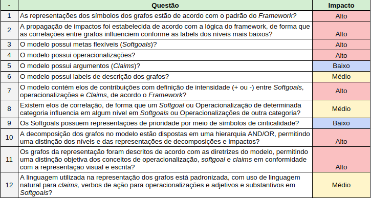
Registro de Inspeção

Tabela de medição

Inspeções
Relação de inspeções

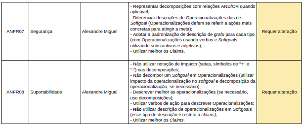
ANFR-01
Rastreabilidade: ANFR01 - Usabilidade do Sistema
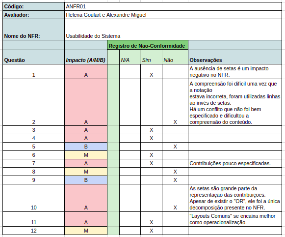
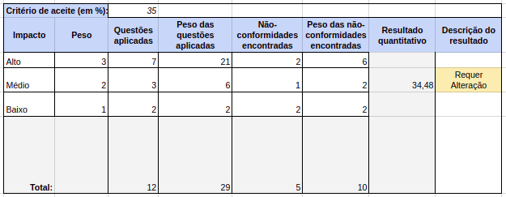
ANFR-02
Rastreabilidade: ANFR02 - Suporte


ANFR-03
Rastreablidade: ANFRO3 - Confiabilidade

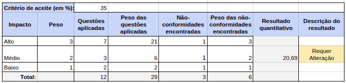
ANFR-04
Rastreabilidade: ANFR04 - Conectividade
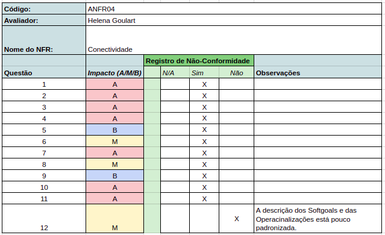

ANFR-05
Rastreabilidade: ANFR05 - Usabilidade - Design
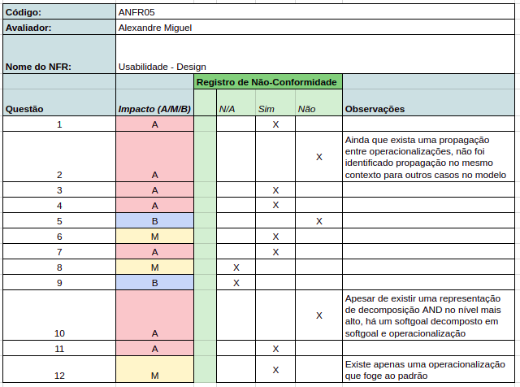
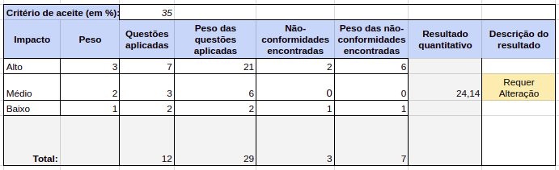
ANFR-06
Rastreabilidade: ANFR06 - Desempenho
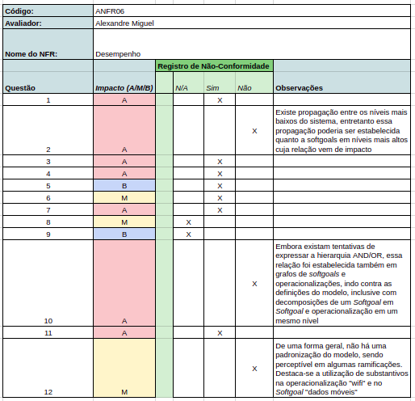

ANFR-07
Rastreabilidade: ANFR07 - Segurança
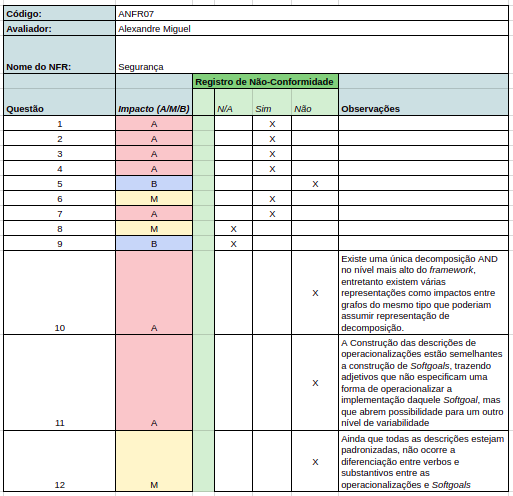
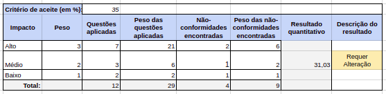
ANFR-08
Rastreabilidade: ANFR08 - Suportabilidade
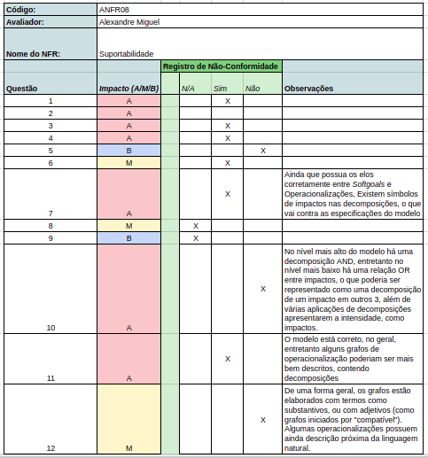
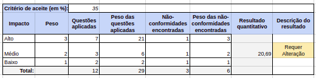
Resultados
Com a realização da inspeção dos casos de uso foi verificado que todos eles possuem algum ponto em que precisam de melhoria, porém tivemos um resultado de 2 aprovados, 1 reprovado e outros 6 que requerem alterações para serem utilizados.
Conclusão
A inspeção dos NFR com base nos referenciais teóricos possibilitou a avaliação de métricas essenciais e a identificação de erros. Com as tabelas de inspeção a correção de cada caso de uso será facilitada com os pontos fracos já listados.
Referências
[1] - Gregolin, Rosângela. Uma proposta de inspeção em modelos de caso de uso. 2007. Disponível em: http://cassiopea.ipt.br/teses/2007_EC_Rosangela_Gregolin.pdf. Acesso em: 01 nov. 2018.
[2] - PAIM, Fá Rilston Silva; CASTRO, Jaelson. Enhancing Data Warehouse Design with the NFR Framework. Wer, v. 2, p. 40-57, 2002. Disponível em: http://wer.inf.puc-rio.br/WERpapers/pdf_counter.lua?wer=WER02&file_name=paim.pdf
[3] - COUTO, Anselmo; MARTINS, Luiz Eduardo. (2009). Um Processo de Validação de Requisitos Não-Funcionais Baseado no NFR-Framework. Disponível em: https://www.researchgate.net/publication/221235239_Um_Processo_de_Validacao_de_Requisitos_Nao-Funcionais_Baseado_no_NFR-Framework
[4] - SERRANO, Maurício. Desenvolvimento Intencional de Software Transparente Baseado em Argumentação. 2011. Tese de Doutorado. PUC-Rio. Disponível em: http://www-di.inf.puc-rio.br/~julio/Mauricio.pdf